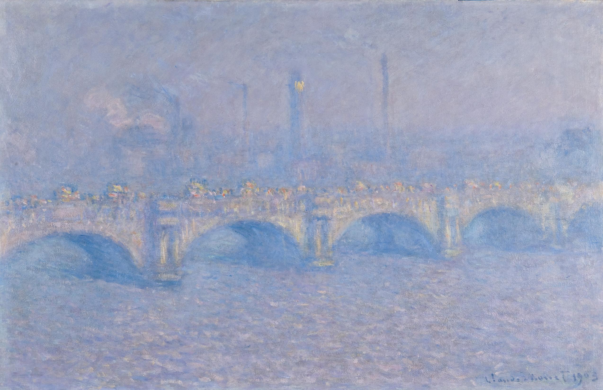
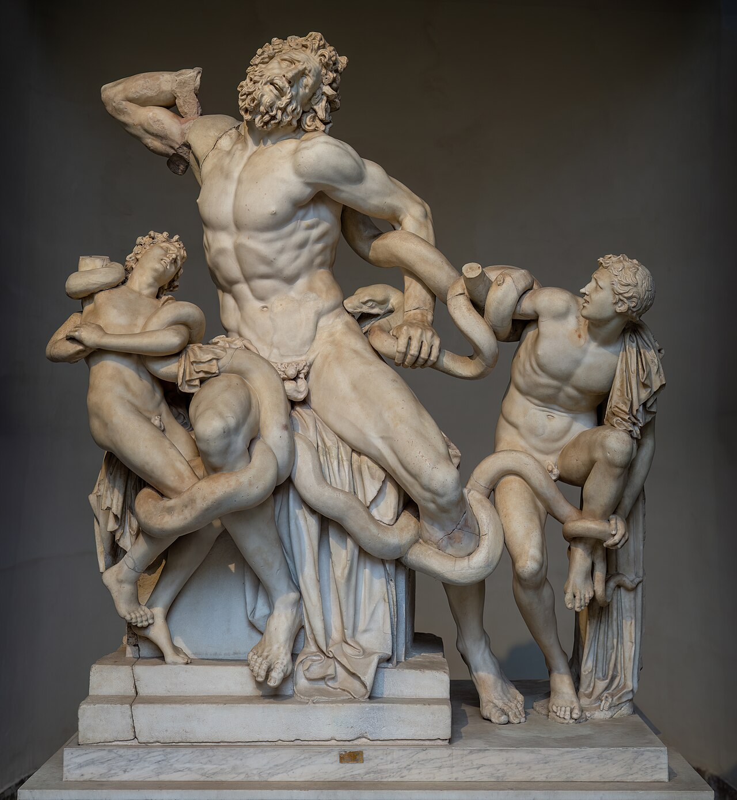
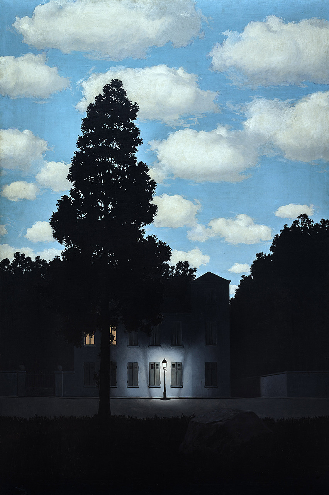
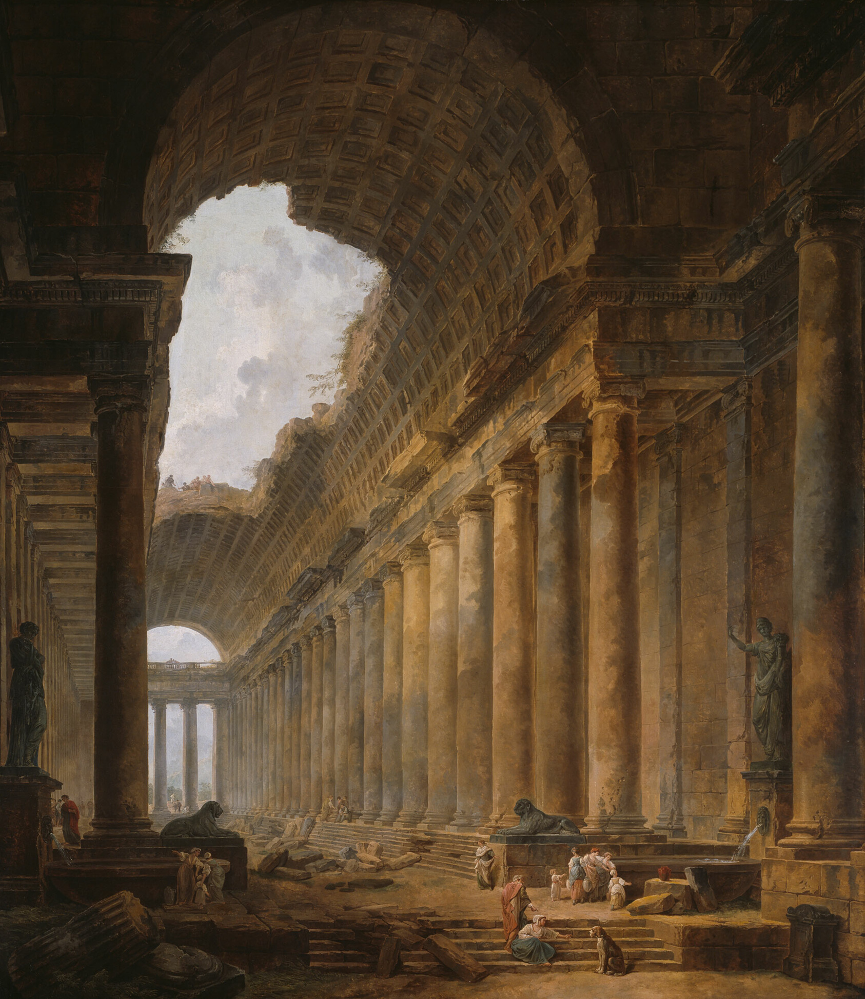
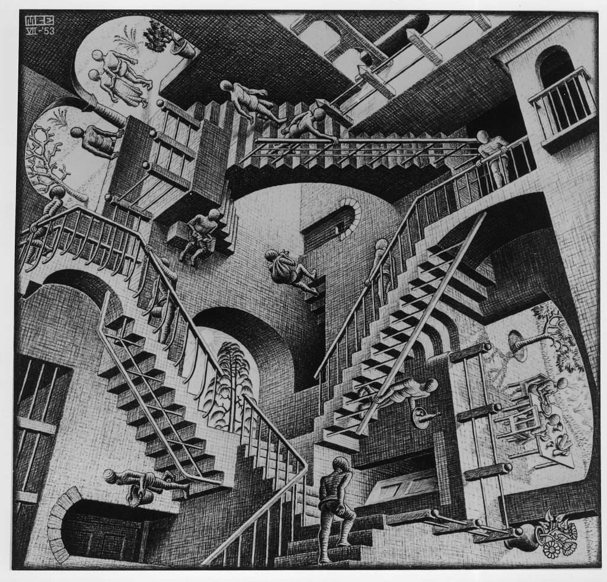
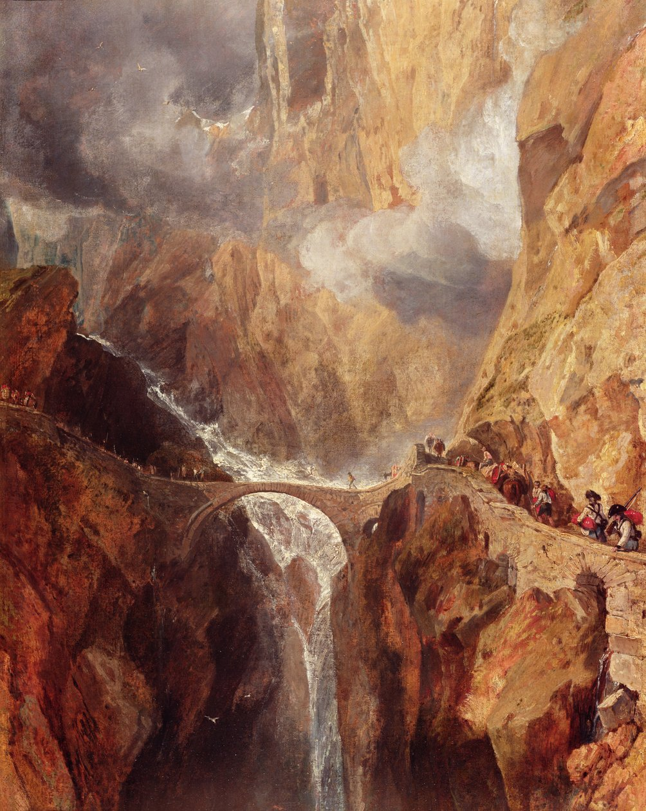
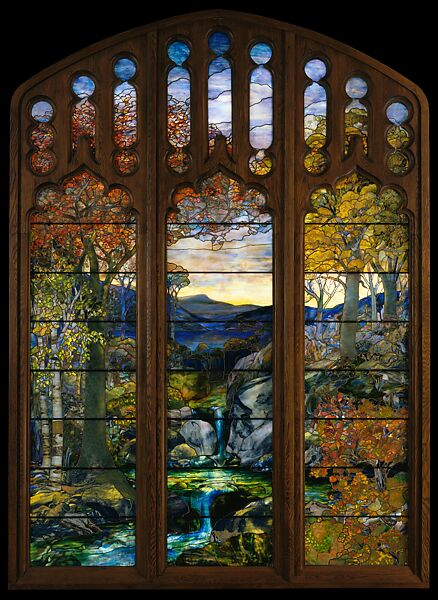
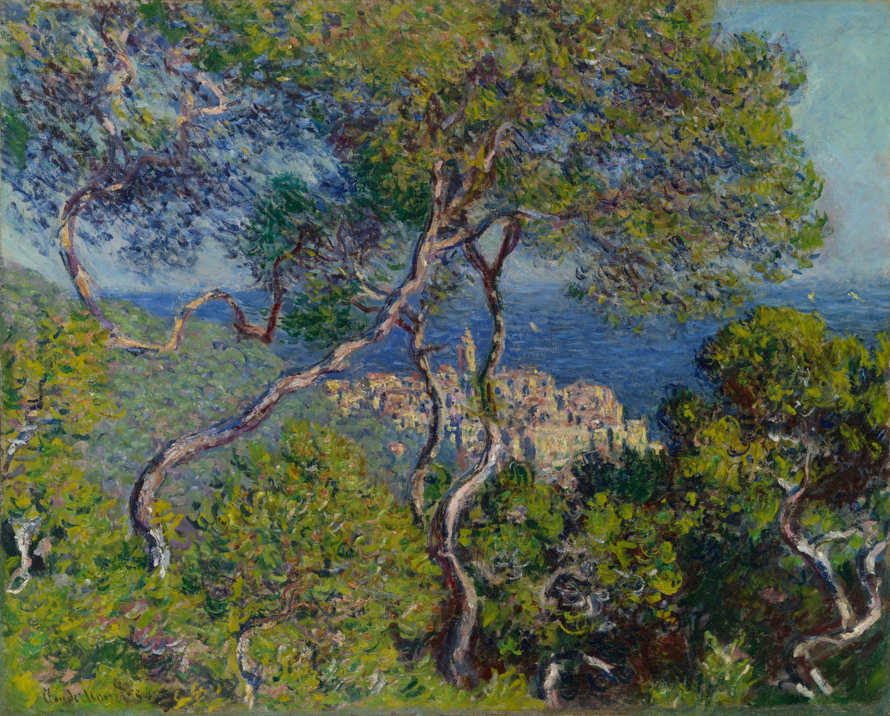
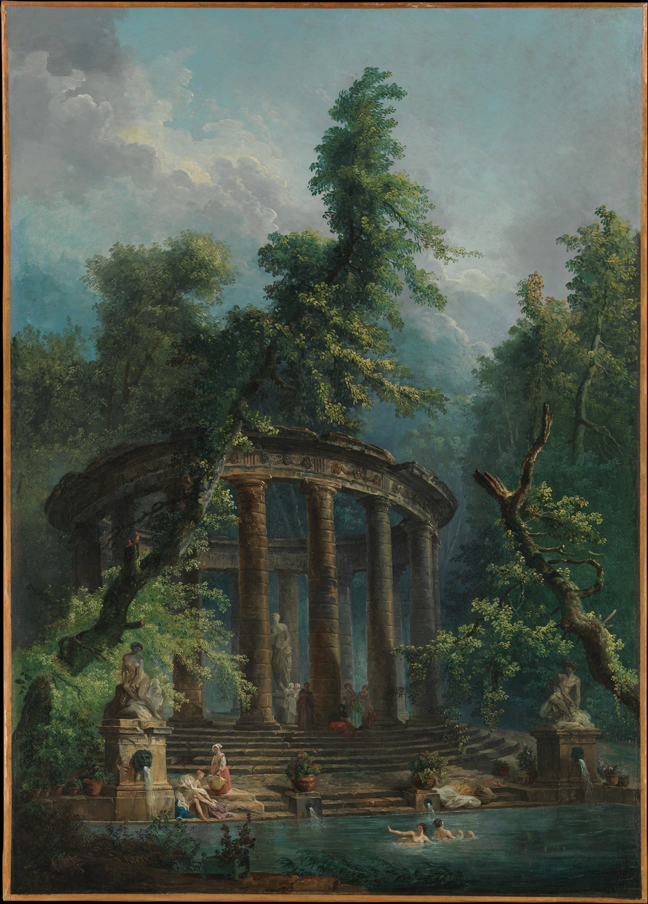
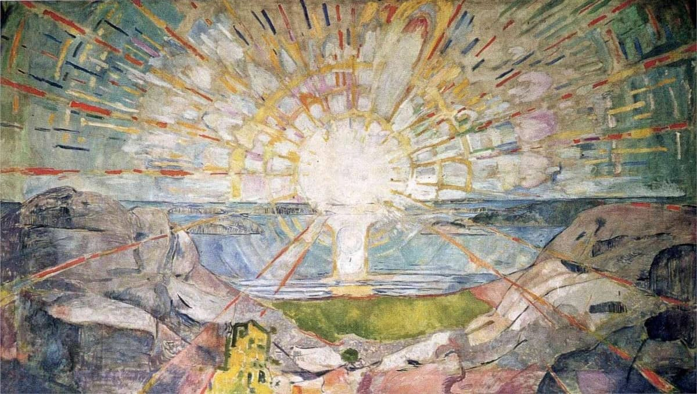

Things I Like
A gallery of poems, paintings, and other misc. content I keep coming back to.

Everything is Going to be All Right
How should I not be glad to contemplate
the clouds clearing beyond the dormer window
and a high tide reflected on the ceiling?
There will be dying, there will be dying,
but there is no need to go into that.
The poems flow from the hand unbidden
and the hidden source is the watchful heart.
The sun rises in spite of everything
and the far cities are beautiful and bright.
I lie here in a riot of sunlight
watching the day break and the clouds flying.
Everything is going to be all right.
Derek Mahon
the clouds clearing beyond the dormer window
and a high tide reflected on the ceiling?
There will be dying, there will be dying,
but there is no need to go into that.
The poems flow from the hand unbidden
and the hidden source is the watchful heart.
The sun rises in spite of everything
and the far cities are beautiful and bright.
I lie here in a riot of sunlight
watching the day break and the clouds flying.
Everything is going to be all right.



Wild Geese
You do not have to be good.
You do not have to walk on your knees
For a hundred miles through the desert, repenting.
You only have to let the soft animal of your body
love what it loves.
Tell me about despair, yours, and I will tell you mine.
Meanwhile the world goes on.
Meanwhile the sun and the clear pebbles of the rain
are moving across the landscapes,
over the prairies and the deep trees,
the mountains and the rivers.
Meanwhile the wild geese, high in the clean blue air,
are heading home again.
Whoever you are, no matter how lonely,
the world offers itself to your imagination,
calls to you like the wild geese, harsh and exciting--
over and over announcing your place
in the family of things.
Mary Oliver
You do not have to walk on your knees
For a hundred miles through the desert, repenting.
You only have to let the soft animal of your body
love what it loves.
Tell me about despair, yours, and I will tell you mine.
Meanwhile the world goes on.
Meanwhile the sun and the clear pebbles of the rain
are moving across the landscapes,
over the prairies and the deep trees,
the mountains and the rivers.
Meanwhile the wild geese, high in the clean blue air,
are heading home again.
Whoever you are, no matter how lonely,
the world offers itself to your imagination,
calls to you like the wild geese, harsh and exciting--
over and over announcing your place
in the family of things.

 Machine Learning
xkcd 1838
Machine Learning
xkcd 1838


 SCIgen Talk
Ian Smirlis
SCIgen Talk
Ian Smirlis
Julius Caesar, Act III, Scene II
Friends, Romans, countrymen, lend me your ears;
I come to bury Caesar, not to praise him.
The evil that men do lives after them;
The good is oft interred with their bones;
So let it be with Caesar. The noble Brutus
Hath told you Caesar was ambitious:
If it were so, it was a grievous fault,
And grievously hath Caesar answer'd it.
Here, under leave of Brutus and the rest–
For Brutus is an honourable man;
So are they all, all honourable men–
Come I to speak in Caesar's funeral...
William Shakespeare
I come to bury Caesar, not to praise him.
The evil that men do lives after them;
The good is oft interred with their bones;
So let it be with Caesar. The noble Brutus
Hath told you Caesar was ambitious:
If it were so, it was a grievous fault,
And grievously hath Caesar answer'd it.
Here, under leave of Brutus and the rest–
For Brutus is an honourable man;
So are they all, all honourable men–
Come I to speak in Caesar's funeral...


Plan A
AI companies are racing to build AIs that are smarter than humans in every way. In AI 2027, we predicted that this would result in either extinction or irreversible concentration of power. Plan A is our positive vision for what should happen instead.
AI Futures Project
keep reading ↗
 AI-Box Experiment
xkcd 1450
AI-Box Experiment
xkcd 1450

Statement of Teaching Philosophy
My students want certainty. They want it
so badly. They respect science and have memorized
complex formulas. I don't know
how to tell my students their parents
are still just as scared. The bullies get bigger
and vaguer and you cannot punch a cloud.
I have eulogies for all my loved ones prepared,
but cannot include this fact in my lesson plans.
The best teacher I ever had told me to meet him
at the basketball court. We played pick-up for hours.
By the end, I lay panting on the hardwood
and couldn't so much as stand.
He told me to describe the pain in my chest.
I tried. I couldn't find the words. Not exactly.
Listen, he said, that's where language ends.
Keith Leonard
so badly. They respect science and have memorized
complex formulas. I don't know
how to tell my students their parents
are still just as scared. The bullies get bigger
and vaguer and you cannot punch a cloud.
I have eulogies for all my loved ones prepared,
but cannot include this fact in my lesson plans.
The best teacher I ever had told me to meet him
at the basketball court. We played pick-up for hours.
By the end, I lay panting on the hardwood
and couldn't so much as stand.
He told me to describe the pain in my chest.
I tried. I couldn't find the words. Not exactly.
Listen, he said, that's where language ends.



The Summer Day
Who made the world?
Who made the swan, and the black bear?
Who made the grasshopper?
This grasshopper, I mean —
the one who has flung herself out of the grass,
the one who is eating sugar out of my hand,
who is moving her jaws back and forth instead of up and down —
who is gazing around with her enormous and complicated eyes.
Now she lifts her pale forearms and thoroughly washes her face.
Now she snaps her wings open, and floats away.
I don't know exactly what a prayer is.
I do know how to pay attention, how to fall down
into the grass, how to kneel down in the grass,
how to be idle and blessed, how to stroll through the fields,
which is what I have been doing all day.
Tell me, what else should I have done?
Doesn't everything die at last, and too soon?
Tell me, what is it you plan to do
with your one wild and precious life?
Mary Oliver
Who made the swan, and the black bear?
Who made the grasshopper?
This grasshopper, I mean —
the one who has flung herself out of the grass,
the one who is eating sugar out of my hand,
who is moving her jaws back and forth instead of up and down —
who is gazing around with her enormous and complicated eyes.
Now she lifts her pale forearms and thoroughly washes her face.
Now she snaps her wings open, and floats away.
I don't know exactly what a prayer is.
I do know how to pay attention, how to fall down
into the grass, how to kneel down in the grass,
how to be idle and blessed, how to stroll through the fields,
which is what I have been doing all day.
Tell me, what else should I have done?
Doesn't everything die at last, and too soon?
Tell me, what is it you plan to do
with your one wild and precious life?

Life is Short
Life is short, as everyone knows. When I was a kid I used to wonder about this. Is life actually short, or are we really complaining about its finiteness? Would we be just as likely to feel life was short if we lived 10 times as long?
Paul Graham
keep reading ↗
↗
warm glow
Hippo Campus

Song of Myself, 51
The past and present wilt—I have fill’d them, emptied them.
And proceed to fill my next fold of the future.
Listener up there! what have you to confide to me?
Look in my face while I snuff the sidle of evening,
(Talk honestly, no one else hears you, and I stay only a minute longer.)
Do I contradict myself?
Very well then I contradict myself,
(I am large, I contain multitudes.)
I concentrate toward them that are nigh, I wait on the door-slab.
Who has done his day’s work? who will soonest be through with his supper?
Who wishes to walk with me?
Will you speak before I am gone? will you prove already too late?
Walt Whitman
And proceed to fill my next fold of the future.
Listener up there! what have you to confide to me?
Look in my face while I snuff the sidle of evening,
(Talk honestly, no one else hears you, and I stay only a minute longer.)
Do I contradict myself?
Very well then I contradict myself,
(I am large, I contain multitudes.)
I concentrate toward them that are nigh, I wait on the door-slab.
Who has done his day’s work? who will soonest be through with his supper?
Who wishes to walk with me?
Will you speak before I am gone? will you prove already too late?